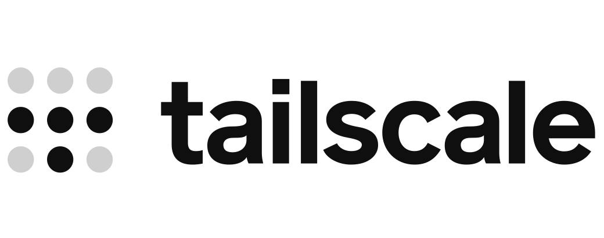
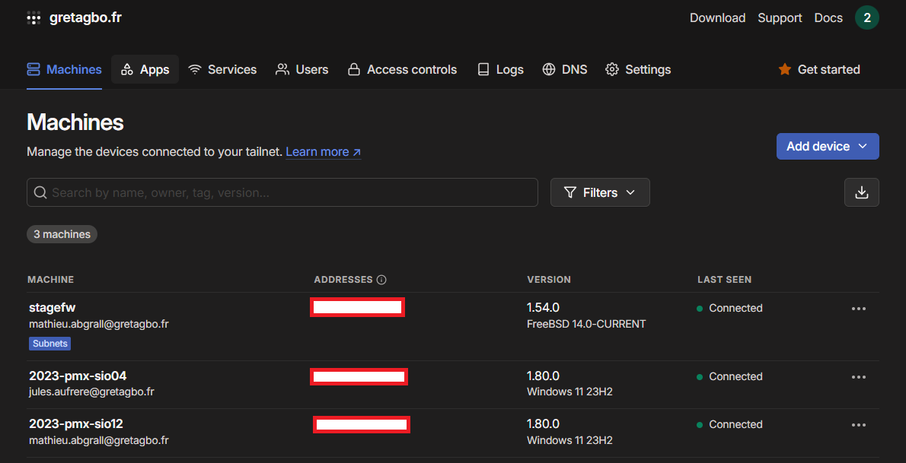
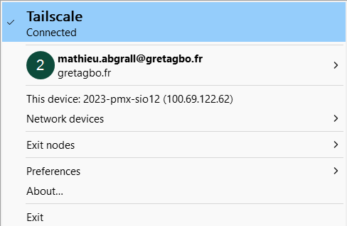
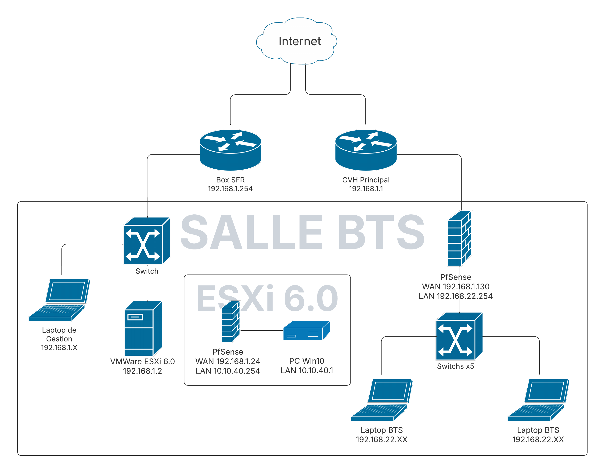
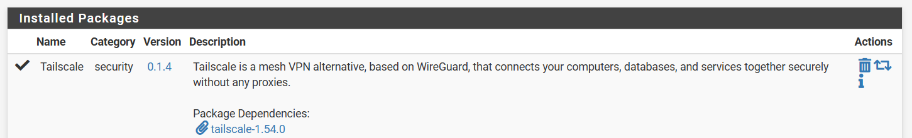
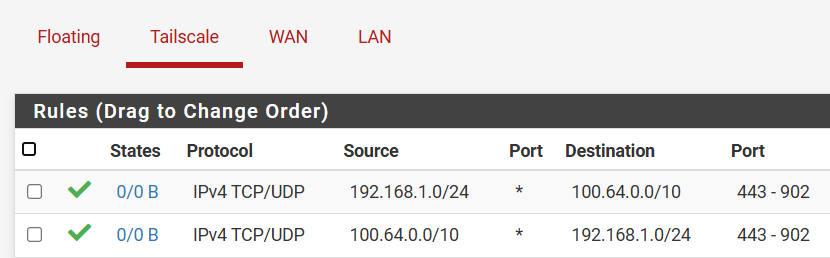
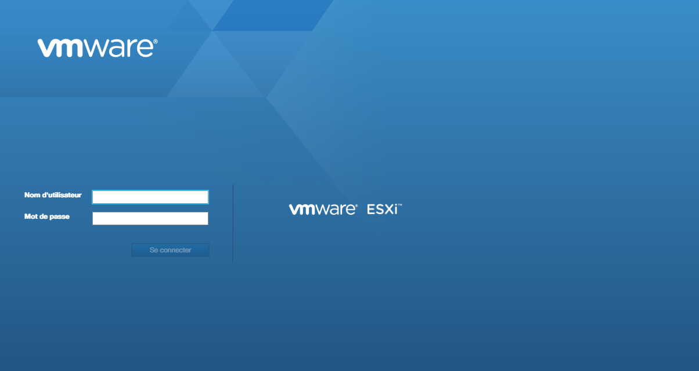

Projet : Mise en place d’un accès VPN à distance sécurisé (Tailscale + pfSense)
Dans le cadre de mon stage BTS SIO SISR, nous avons mis en place une solution VPN me permettant d’accéder à distance à l’interface ESXi.
L’objectif : configurer un tunnel VPN simple, sécurisé et sans ouverture de ports, en utilisant pfSense et le service Tailscale basé sur WireGuard.

Pourquoi Tailscale ?
Tailscale est une solution VPN moderne, simple à déployer et basée sur le protocole WireGuard. Elle permet d’établir des connexions VPN via le port HTTPS (443),
sans nécessiter d’IP publique ou de configuration complexe. Elle applique une politique de Zero Trust et propose un chiffrement de bout en bout.

Étapes de mise en œuvre
1. Analyse du besoin
Accès distant sécurisé à une interface ESXi via VPN
Facilité de déploiement sans ouverture de port

Schéma réseau du projet
Comparaison entre OpenVPN, WireGuard, Tailscale
Choix de Tailscale pour sa simplicité et sa sécurité
3. Installation sur pfSense
Installation du package Tailscale via le gestionnaire de paquets
Génération d’une clé d’authentification depuis la console Tailscale
Connexion de pfSense au réseau Tailscale

4. Configuration du routage
Ajout de routes pour l’accès à l’interface ESXi
Aucune configuration pare-feu nécessaire grâce à l’authentification Tailscale

5. Accès distant sécurisé
Connexion à l’interface ESXi à distance comme si l'on était sur le réseau local
Appareils connectés approuvés manuellement (Zero Trust)
Chiffrement de bout en bout activé

6. Fonctionnalités disponibles
Version gratuite suffisante pour 100 appareils et 3 utilisateurs
Possibilité d’évolution vers une version entreprise avec SSO, ACLs, etc.